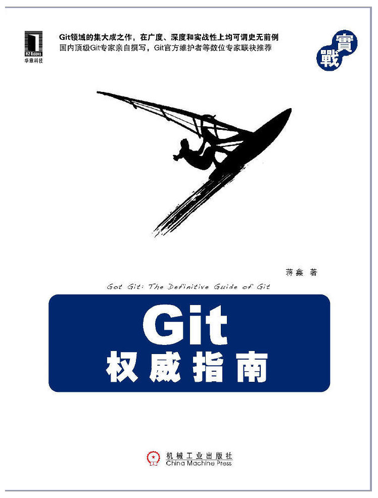

《Git权威指南》
参考资料
| 作者: | 蒋鑫 |
|---|---|
| 网址: | http://www.ossxp.com/doc/gotgit/ |
| 版本: | 1.0-11-gdb60b10 |
| 日期: | 2011/07/21 11:33:08 |
| 版权信息: |
目录
关于本书

《Git权威指南》一书由机工华章于 2011年6月底出版，作者是 北京群英汇信息技术有限公司 高级顾问 蒋鑫。 注意本书是原创，不是翻译的哦。
网上能够找到很多Git资料和电子书，包括《Git社区书》， 以及《ProGit》等，都是非常好、非常系统的教程， 也正是这些教程引领了我的Git学习之路。那么我写的Git书有什么特别之处呢？ 以下是我认为这本书的优势：
降低跨越的难度。
我曾经因为Git的古怪而放弃Git，改用Mercurial(Hg)。 因此一本成功的Git书要兼顾版本控制老用户的体验， 即要照顾到那些拥有其他版本控制工具使用经验的用户的使用习惯和需求。独特的讲故事的方式。
我有着自己讲故事的方式，这是我多年来为不同公司做 Subversion 和 Git 培训和技术支持所积累的经验。 （顺便说一句，书出了可以继续找我做培训哦，面对面的交流可比读书有意思多了）。8)介绍了众多实用的Git协同模型。
是什么将我由Mercurial拉回Git的呢？是Topgit， 一个对Git特性分支管理做了封装的上层工具。 我对这款工具感触良多，而且也透彻的研究和改造了这一工具， 相信我们在开源软件定制开发中用到的这一独特的Git协同模式也同样适用于他人。子模组不堪大任，我找到了更好的多版本库协同模型 —— 来自于Android的Repo。
在给客户培训Git过程中，我发现客户在Android驱动开发中采用的独特的开发模式： Repo + Gerrit，于是深入其中发现别有洞天。 我还对 Repo 进行了扩展，以便让其有更广阔的适用范围。改进的 Gitosis 及 Gitolite。
基于SSH的Git服务器软件，在使用中我们对其做了很多改造，更加符合用户的使用习惯。我开发的一款备份工具 Gistore。
我为这款工具起的名字来自于这两个单词的组合：Git + Store。 是用Python开发的以Git为后端的备份工具。 在该工具的开发中，我获得了更多的Git使用经验。
如何购买
China-pub 互动出版网
http://product.china-pub.com/194010中关村图书大厦网上书店
http://www.zgcbb.com/detail.aspx?bid=760959
广购书城：广州购书中心网上书店
http://www.gg1994.com/Product.do?id=1120692当当网（暂未上架）
http://product.dangdang.com/product.aspx?product_id=21108669京东商城（暂未上架）
http://book.360buy.com/10697183.html
在线资源
采用Git方式维护的官方网站，欢迎大家一起参与其中。
关于本书以及相关技术的讨论，还有本书的样章提供下载。
欢迎大家通过新浪微博与我交流，有什么意见和建议@我。
社交网站140字的限制让复杂的交流显得吃力，这个邮件列表可以弥补不足。
资源下载
- 代码示例下载
本地下载 - 演示版本库1
https://github.com/ossxp-com/gitdemo-commit-tree/ - 演示版本库2 (Hello world)
https://github.com/ossxp-com/hello-world/ - 本资料库
https://github.com/ossxp-com/gotgit/
- 代码示例下载
业界评价（以书评时间的先后为序）
Junio C Hamano
“我是Junio C Hamano，Git的主要维护者。我当年写了一本针对日本读者的Git书， 当我把我签名的书送给Linus时，他对我说：“除了截图和命令行示例外， 什么也看不懂（Linus不懂日文）”。基于同样的原因，虽然我不能了解这本书的全貌， 但是我可以看出这本书涵盖了非常广泛的主题，并且看出蒋鑫对这本书的用心。 我非常高兴能够看到这本书的出版，感谢向世界传播Git。”
八卦：同时向 Git 社区大佬 Junio 和 Linus 发送本书章节目录的翻译稿， 其中的翻译错误让人忍俊不住（感谢表妹和男友鹏辉）。 本书发行后，会同时给 Junio 和 Linus 邮寄一本签名版， 并争取“等价”交换一本他们的自传或图书。
范凯，CSDN平台开发总监/Javaeye创始人
“仔细拜读了本书前三篇共20章的内容，在我看来，这本书非常棒。 作者在软件版本管理控制系统方面有超过10年的经验， 对版本管理系统有非常深入的认识，实践经验也十分丰富。尤为难得的是， 本书文笔很流畅，虽然是技术书籍，但是作者娓娓道来，阅读体验很好。 Git的学习门槛较高，包括我们公司在内的很多企业都将版本管理系统转向了Git， 这本书能给我们带来帮助，强烈推荐。”
八卦：为了能够获得CSDN评价，发动有限的社会资源向CSDN的老大传声，收效甚微。 最后我厚着二皮脸直接向CSDN 蒋总发送秋天的菠菜，... 我给范凯发送了本书前三篇的内容作为样章（300页）， 没想到范凯在百忙中居然全部读完，之后才写撰写书评，让我佩服他的严谨。 编辑等待CSDN的书评一直很心急，也许当初我只发前言就好了。 8)
许晓斌，《Maven实战》的作者，Git的重度使用者
“这是我读过的关于Git最好的书。将复杂的Git解释得清晰透彻绝非易事， 蒋鑫做到了，更让人惊喜的是他还分享了大量的经验总结。 我多年来积累的许多疑惑在读罢该书后一一得以解开。 如果你正在使用，或者打算使用Git，本书当然是必备的。 你也可以抱着Subversion/CVS不放， 不过哪天有人拿起这本书敲你头的时候可别怪我没提醒过你。”
八卦：许晓斌对本书帮助良多，大概是除了我和编辑之外， 仅有的在本书上市前完整看过书稿的人。面对《Git权威指南》出版社一排书稿， 大概又想到了当初自己书稿被编排的惨痛体验了吧... ;)
冯铃，清华大学计算机科学与技术系“长江学者”特聘教授
- “Git是当前开源社区最流行的版本控制系统，代表了版本控制的未来。 每一个有志于计算机编程的学习者都应该学习和掌握这一工具，它不但 用于追踪编程者的思考过程，还是打开开源软件世界的金钥匙，更可以 通过版本控制掌握与他人协同工作的技能。本书是一本耐读原创之书， 因为其涵盖的内容之广足可以让一名程序员在成长的不同阶段都可以从 中汲取丰富营养。”
徐继哲，哲思社区 创始人
“目前市面上关于Git的书不在少数，但迄今为止， 国内外还没有一本书能在广度和深度上达到本书的水平， 也许在今后相当长的一段时间内也不会有。如果你是一位软件开发者， 强烈建议你学习并使用Git；如果你要学习Git，本书无疑是你最佳的选择。”
八卦：我也一样地痛恨招商银行， 招行一卡通专业版不能工作在Linux或者Windows虚拟机中，不思进取，侮辱国人智慧。
本书勘误
查看：本书勘误。
您发现了新的错误么？贡献出来吧，这厢有礼了。Orz
- 记录您发现的问题。
访问：http://redmine.ossxp.com/redmine/projects/gotgit 。 - 修改本Git版本库中的勘误表。
版本库地址：https://github.com/ossxp-com/gotgit/ 。
您的贡献可以使用 Github 的 pull request 方式通知我，或者上新浪微博@我。
操作回放
本书的部分操作用 ttyrec 录制，查看请访问：《Git权威指南》——操作回放。 读者除了可以看到“活”的操作外，还可以从回放当中复制操作的代码。
如果该网页不存在、无法访问，或是您想在本地回放，或者想在其中添加您自己的操作回放， 有两种方式：
方式一：你可以从 Github 上克隆本版本库，编译相关网页。
克隆版本库。
$ git clone git://github.com/ossxp-com/gotgit.git确认系统中安装了 ruby 和 perl，并通过 rubygems 安装 redcarpet。
$ gem install redcarpet执行编译。
$ rake点击生成的页面：《Git权威指南》——操作回放。
方式二：版本库中本来就保存了一份已编译文档，只不过缺省没有克隆出来。
如果您的系统上缺乏相应的工具软件而无法成功编译， 在版本库中实际上保存了一份已经编译好的文件，可以通过Git下载， 并检出到工作区。
克隆版本库。
$ git clone git://github.com/ossxp-com/gotgit.git添加新的配置，以便获取首次克隆未获取到的远程分支。
$ git config --add remote.origin.fetch +refs/remotes/*:refs/remotes/*执行获取操作。
$ git fetch检出分支 refs/remotes/compiled 分支中的内容到工作区。
$ git checkout compiled -- .执行重置，将已编译文档撤出暂存区，当然工作区中仍然保留。
$ git reset点击检出的页面：《Git权威指南》——操作回放。
如果您自己想把自己录制的操作与他人共享，可以将录制的文件以 ".ttyrec" 扩展名保存到 ttyrec 目录下。 执行 rake 命令，可以自动生成新的播放页面。